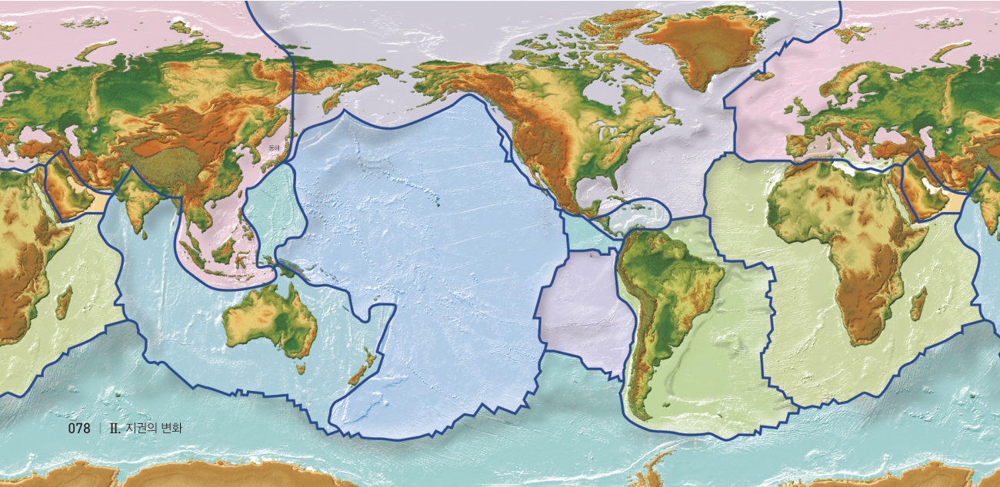
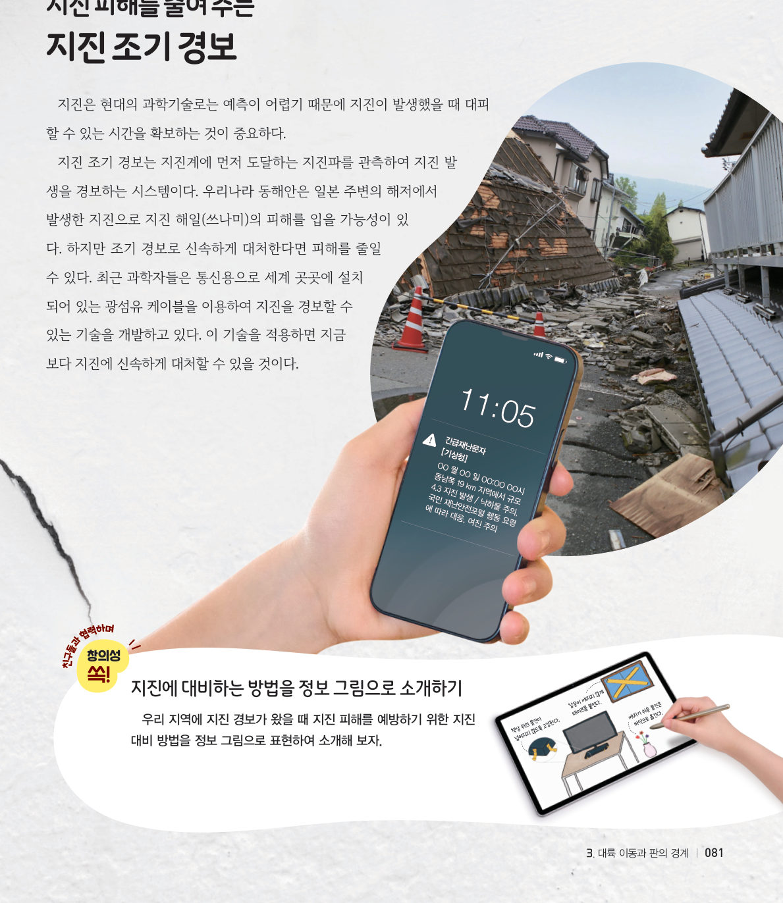

살아있는 교과서 · Ⅱ. 지권의 변화 · 3. 대륙 이동과 판의 경계 · 02 78~82쪽 · 대단원 마무리
크고 작은 여러 개의 판
“지진이 또 일어났어.” 지진은 왜 특정한 지역에서 자주 일어날까? 가상 빅데이터 지도에 지진과 화산을 찍어 판의 경계와 겹쳐 보고, 지진 조기 경보가 몇 초를 벌어 주는지 계산해 보자.
🎯 이 단원을 배우면 — 화산 활동과 지진이 일어나는 지역의 분포를 판의 경계와 관련지어 설명할 수 있다.
교과서판의 경계에서는 어떤 현상이 일어날까? 78쪽
과학자들은 화산 활동과 지진이 일어난 지역의 분포 등을 연구해 지구의 겉 부분이 크고 작은 여러 개의 조각으로 나누어져 있다는 것을 알아냈다. 이 여러 개의 조각을 ●판이라고 한다. 판은 지각과 맨틀의 윗부분을 포함하는 단단한 암석층으로 이루어져 있다. 판은 느리게 이동하고 있으며, 판의 이동으로 대륙이 함께 이동한다. 판의 분포와 경계는 그림 2-19와 같다.
●판의 구조 판은 약 100 km 두께의 단단한 암석층으로 이루어져 있다.

그림 2-19판의 분포와 경계
1지표 부근의 단면에서 판에 해당하는 것은 이다.
탐구 · 자료 변환·비교·분석·해석하기빅데이터를 활용하여 화산대 및 지진대와 판의 경계와의 관련성 탐구하기 79쪽
화산 활동과 지진은 특정 지역에서 자주 일어난다. 화산 활동이 자주 일어나는 지역을 화산대라고 하고, 지진이 자주 일어나는 지역을 지진대라고 한다. 화산대와 지진대의 분포는 대체로 띠 모양을 이룬다.
79쪽“화산 활동이 일어난 지역의 분포야. 띠 모양처럼 보여.”
빅데이터 활용 프로그램에서 화산 활동과 지진이 일어난 지역의 분포를 확인한다.
확인한 분포를 그림 2-19의 판의 경계와 비교한다.
가상 빅데이터 지도최근 수십 년의 지진·화산 기록
[자료 불러오기]로 지진과 화산 기록을 지도에 찍은 뒤, [판의 경계 겹치기]를 켜 보자. 분석 결과가 아래에 나와요. 지도를 누르면 그 지점 근처의 기록 수를 알려 줘요. (교육용으로 만든 가상 자료)
자료를 불러오세요
불러온 지진0
불러온 화산0
판의 경계 근처(약 300 km 이내) 지진-
1지진과 화산 기록은 지도에 나타나며, 화산대와 지진대는 와 거의 일치한다.
2화산대와 지진대가 잘 나타나는 지역을 모두 고르시오.
💬정리해 볼까 탐구 결과를 바탕으로 화산대 및 지진대의 분포를 판의 경계와 관련지어 추론해 보자.
교과서화산대와 지진대, 판의 경계 80쪽
화산대와 지진대는 그림 2-20과 같이 ●태평양 가장자리, 대서양 중앙 지역, 알프스와 히말라야를 잇는 지역에서 잘 나타난다. 또한 화산대와 지진대는 판의 경계와 거의 일치한다. 판의 경계에서는 판이 계속해서 움직이고 있어 화산 활동이나 지진과 같은 지각 변동이 자주 일어나기 때문이다.
●환태평양 화산대와 지진대 태평양 가장자리를 따라 분포하는 화산대와 지진대이다. 지구에서 일어나는 화산 활동의 70 % 이상, 지진의 90 % 이상이 일어나는 지역으로 ‘불의 고리’라고 불린다.
그림 2-20화산대와 지진대의 분포와 판의 경계
스스로 확인하기78쪽 학습 목표를 달성했는지 확인해 보자 80쪽
1개념 확인 화산 활동이 자주 일어나는 지역을 ( )라고 하고, 지진이 자주 일어나는 지역을 ( )라고 한다.
2사고력 우리나라에서보다 일본에서 화산 활동과 지진이 더 자주 일어나는 까닭을 판의 경계와 관련지어 설명해 보자. (빅데이터 지도에서 우리나라와 일본 근처를 눌러 비교해 보자.)
🧩 세 번째 블록 · 힌트 조각 2 (80쪽)
지구 겉 부분에 분포한 크고 작은 ( )의 이동으로 대륙이 함께 이동한다.
과학이 톡지진 피해를 줄여 주는 지진 조기 경보 81쪽

81쪽긴급재난문자와 지진 대비 방법
지진은 현대의 과학기술로는 예측이 어렵기 때문에 지진이 발생했을 때 대피할 수 있는 시간을 확보하는 것이 중요하다. 지진 조기 경보는 지진계에 먼저 도달하는 지진파를 관측하여 지진 발생을 경보하는 시스템이다. 최근 과학자들은 통신용 광섬유 케이블을 이용하여 지진을 경보할 수 있는 기술을 개발하고 있다.
가상 실험경보는 몇 초를 벌어 줄까?
지진파 중 빠른 P파(약 6 km/s)가 먼저 지진계에 도착하면, 약 7초 뒤 경보가 발송된다고 하자. 피해를 주는 큰 흔들림(S파, 약 3.5 km/s)이 우리 마을에 오기 전까지 남는 시간을 확인해 보자.
경보 발송7.0 초
큰 흔들림(S파) 도착-
대피할 수 있는 시간-
1진앙에서 175 km 떨어진 마을에서 대피할 수 있는 시간은 약 초이다. 진앙에서 멀수록 대피할 수 있는 시간은 .
💬정보 그림으로 소개하기 우리 지역에 지진 경보가 왔을 때 피해를 예방하기 위한 지진 대비 방법을 정리해 보자.
5분 테스트크고 작은 여러 개의 판
1옳으면 O, 옳지 않으면 X
② 판은 지각과 맨틀의 윗부분을 포함하는 단단한 층이다.
③ 판은 움직이지 않고 고정되어 있다.
④ 지구의 겉 부분은 크고 작은 여러 개의 판으로 이루어져 있다.
⑤ 판의 두께는 약 35 km이다.
⑧ 지진이 자주 일어나는 지역과 판의 경계는 거의 일치한다.
⑨ 태평양 중앙 지역은 판의 경계에 해당한다.
⑩ 지각 변동은 판의 경계보다 판의 중심에서 자주 일어난다.
⑥ 화산 활동이 자주 일어나는 지역을 , ⑦ 지진이 자주 일어나는 지역을 (이)라 하며, 띠 모양을 이룬다.
스스로 정리하기3. 대륙 이동과 판의 경계 · 세 번째 블록 찾기 82쪽
2판의 구조 · 3화산대와 지진대
⑴ : 지구의 겉 부분에 있는 크고 작은 여러 개의 조각으로 지각과 맨틀의 윗부분을 포함하는 단단한 암석층 — 판의 이동으로 대륙이 함께 이동한다. ⑵ 화산대: 화산 활동이 자주 일어나는 지역 / 지진대: 지진이 자주 일어나는 지역 ⑶ 화산대와 지진대의 분포는 와/과 거의 일치한다.
🧩 세 번째 블록 찾기 · 국가지질공원에서 적도 지역에 살던 생물의 화석이 발견되는 까닭은 무엇일까?
① 과거에 하나로 모여 있었던 거대한 대륙이 분리되고 이동하여 현재와 같은 대륙 분포를 이루었다. (77쪽) ② 지구 겉 부분에 분포한 크고 작은 판의 이동으로 대륙이 함께 이동한다. (80쪽)
두 조각을 모아 세 번째 블록 질문에 답해 보자. 블록 찾기 성공!
대단원 마무리국가지질공원 관찰 보고서 쓰기
Ⅱ단원에서 만난 세 국가지질공원(경북 동해안, 전북 서해안권, 강원 고생대) 중 한 곳을 골라, 배운 내용을 바탕으로 관찰 보고서를 써 보자.
1내가 고른 국가지질공원과 그곳에서 볼 수 있는 암석·지형·화석을 소개하고, 그것이 만들어진 과정을 지권의 변화(암석의 종류와 순환, 판의 이동)와 관련지어 설명해 보자.
나의 학습 확인하기
스스로 평가
지식·이해 대륙 이동설과 판의 경계에서 일어나는 현상을 설명할 수 있는가?
과정·기능 빅데이터를 활용하여 화산대·지진대와 판의 경계의 관련성을 설명할 수 있는가?
가치·태도 모형과 디지털 기기를 활용하는 활동에 흥미를 느끼고 과학의 유용성을 깨달았는가?
💬Ⅱ단원을 마치며 알게 된 점, 어려웠던 점, 더 알아보고 싶은 점을 써 주세요.
제출학생 정보 · 제출하기
모든 활동을 마친 뒤 제출하면 전체가 한 번에 채점되고 피드백이 나타나요. 답안은 선생님 스프레드시트(중2 탭)에 기록돼요.